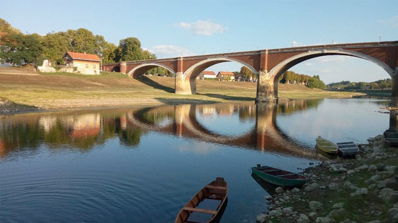
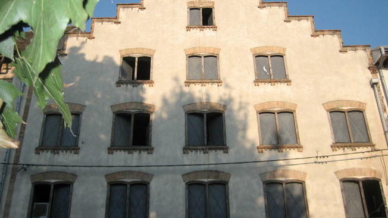
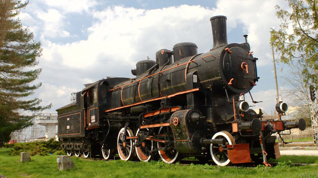
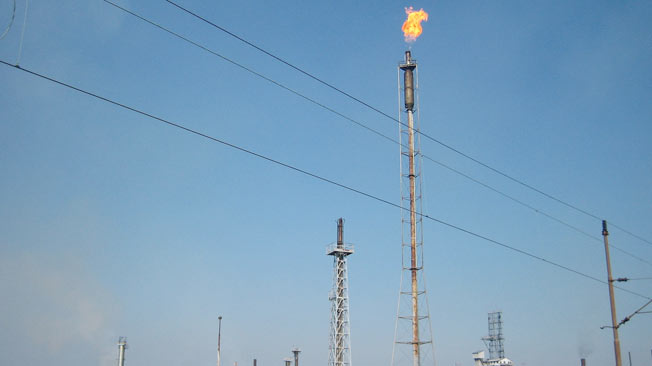
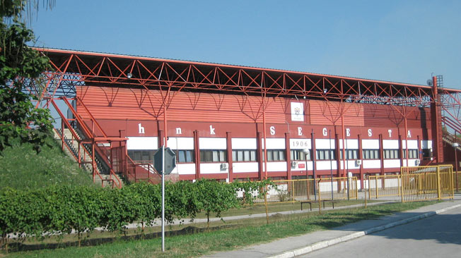
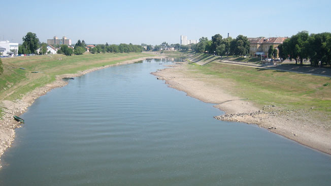
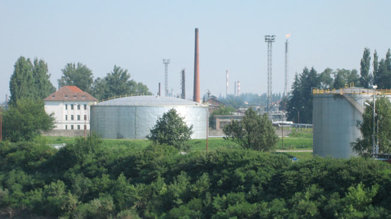
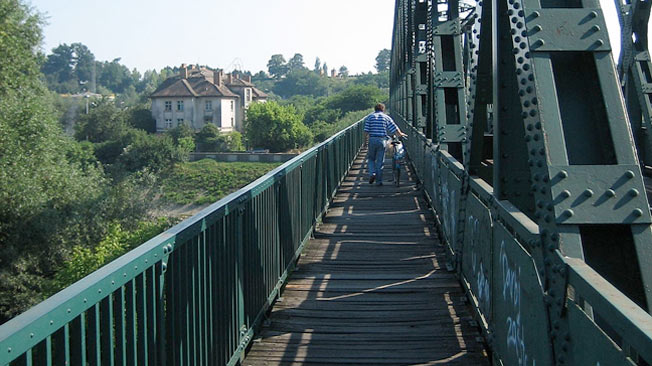
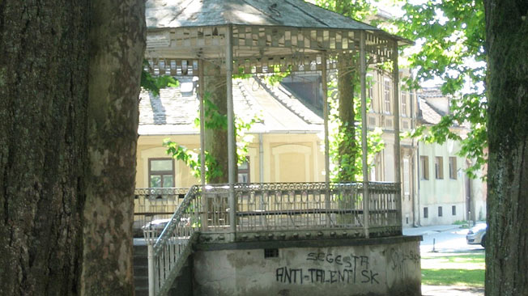

Jedan je od najvećih industrijskih gradova kroz povijest Hrvatske

Sisački stari most, jedan od simbola grada

Skladište iz 18.-19. st., poznato kao „Holandska kuća“

Stara parna lokomotiva izložena na kolodvoru

Postrojenja Rafinerije nafte na Capragu u Sisku

Pročelje stadiona HNK Segeste

Kupa u središtu grada

Postrojenja sisačke rafinerije

Željeznički most preko Kupe, poznat kao „Željezni most“

Glazbeni paviljon u Šetalištu Vladimira Nazora